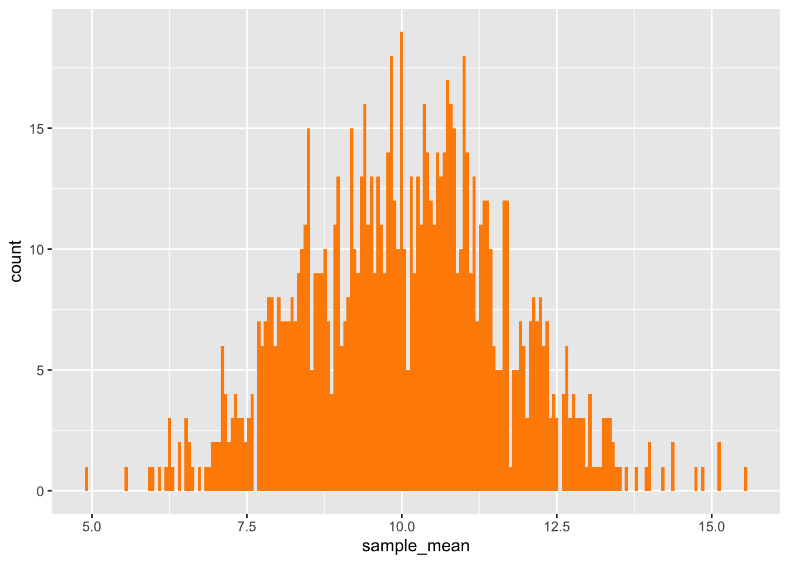
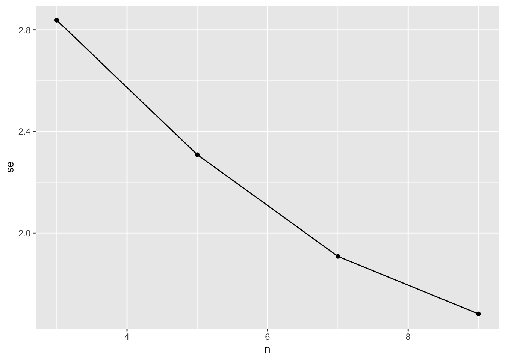

Dplyr is fantastic for simulations. By setting up a set of paramter values or even just simulation numbers, we can repeatedly do things to sample over and over again. For a trivial example, let’s use dplyr to get a column of random numbers. This will be convoluted, but, you’ll see where I’m going with this in a second…
library(dplyr)library(ggplot2)sim_column <-tibble(sims =1:10) |>group_by(sims) |>mutate(rand =runif(1, min =0, max =10)) |>ungroup()sim_column
OK, this is totally trivial, in that we could have just created a second column and used runif(10, 0, 10) and gotten the same result. BUT - note how here we create simulations with the sims variable, and then we group and ungroup on it? This allows us to keep track of simulations throughout - something that will be come very powerful as we move forward. You could use rowwise() instead if you didn’t want to keep track of simulations, but, you’ll often find it convenient to do so.
Simulating Sample Distributions
So how can we use this to simulate sampling? Let’s say we wanted to simulate drawing random samples from a population that was normally distributed. Let’s say our population mean is 10 with a sd of 4. We want 1000 means from a sampling with n=5, and then plot the sampling distribution of means.
This isn’t so bad! We can again create a tibble with a sims column, and then just mutate our way away!
# some parametersn <-10m <-10s <-5mean_sims <-tibble(sims =1:1000) |>group_by(sims) |>mutate(sample_mean =rnorm(n, mean = m, sd = s) |>mean()) |>ungroup()mean_sims
Great! We have our tibble of simulated sample means, and we can plot.
ggplot(data = mean_sims,mapping =aes(x = sample_mean)) +geom_histogram(bins =200, fill ="darkorange")

We can also get our SE of the mean.
sd(mean_sims$sample_mean)
[1] 1.615636
EXERCISE Try getting the sample distribution with n = 10 from a uniform distribution. Is the sample distribution normal? If you up the number of simulations, does it make it easier to see?
Getting the Sample Distribution of Multiple Parameters
That’s cool and all, but what if we want to get the mean AND the standard deviation? We can do the same as above, with both a mean and sd calculation on a re-randomized set of data, but….. when we have a column identifying simulations, that’s usually because we want things generated by that simulation to use the same data - the same stochastic pull of data for each calculation. To do that, we need a two-step process.
For each simulation, generate a set of random data.
Calculate derived sample statistics on that data.
So, how do we make a data set per simulation. Two ideas come to mind…
The top example throws an error (try it) as mutate should return the same number of lines. The seccond work, but we get a deprecation error - that instead of using summarize, if we’re making data that has a new number of rows, we use reframe(). This is a great function in dplyr, as it allows us to expand our data frame if the return value from a function has multiple rows. Let’s see it in action to simulate data using the same parameters as before.
sample_sims <-tibble(sims =1:1000) |>group_by(sims) |>reframe(sample =rnorm(n, mean = m, sd = s)) |>ungroup()sample_sims
Exercise Plot the distributions of the properties. What do they look like. Now repeat the sample simulations and properties for a uniform distribution. Do the resulting distributions look different?
Sample Size and SE
To take this all one step further, we can also look at the effect of sample size on our precision in our estimation of a mean. To do so using dplyr is a snap. We can still group by simulations, but also add in a sample size parameter. To make a full simulation frame, we can use tidyr::crossing() which creates all possible combinations of vectors and turns them into a data frame.
library(tidyr)#for examplecrossing(x =1:3, y =7:9)
# our simulationssims_frame <-crossing(sims =1:1000, n =c(3,5,7,9)) |>group_by(sims, n) |>mutate(sample_mean =rnorm(n, mean = m, sd = s) |>mean())|>ungroup()
We can then look at the effect of sample size on the standard error of the mean by getting the SD of each sim/sample size combination and plotting. This is why I didn’t ungroup() before.
sims_frame |>group_by(n) |>summarize(se =sd(sample_mean)) |>#oh, piping right into a ggplot!ggplot(aes(x = n, y = se)) +geom_line() +geom_point()

If we do this for many many sample sizes, we can generate a curve and see if there is some sample size where the SE levels off, or find a place where we are comfortable with the n versus se tradeoff.
Bootstrap resampling
This is all well and good if we’re pulling from a theoretical distribution. But, what’s this bootstrap resampling we hear about? Quite simply, it’s sampling from a sample with replacement. Rinse and repeat this many many times, and you can calculate bootstrapped statistics. We do this primarily with the sample() function. For example:
vec <-1:10sample(vec, replace =TRUE)
[1] 8 4 5 2 5 1 5 7 5 10
So, if we want to get the boostrapped SE of a sample, we can use sample() instead of rnorm() in our workflow.
# The OG Samplemy_samp <-rnorm(10, mean = m, sd = s) boot_frame <-tibble(sims =1:1000) |>group_by(sims) |>mutate(boot_mean =sample(my_samp, replace =TRUE) |>mean()) |>ungroup()
So, how does the bootstrapped SE compare to the estimate?
sd(boot_frame$boot_mean)
[1] 1.770641
sd(my_samp) /sqrt(10)
[1] 1.786409
Not bad!
Simulating the (linear) World
This is all well and good, but we’re often not interested in estimating means and the like. We want to study systems and relationships! Before going out to sample, we often want to know what kinds of results we might get based on how our system works. This can help us guide our intuition and think about possible things we might observe based on our assumptions. Always test your assumptions! Otherwise you make an ass out of you and me!
Let’s consider a simple system where urban runoff increases the abundance of bloodworms which serve as food for guppies in urban streams but also is toxic and can cause growth problems.
Let’s assume these relationships are linear - y = a + bx + error where error is normally distributed. Let’s setup the simulation like so:
WHOAH! We have specified how the world works!!! What’s nice is that we can now simulate sampling programs from this under different scenarios and see what’s reasonable. Note, we don’t have any random error here. Let’s start nice and deterministic.
We also have these coefficients in here. This is where simulation comes in. Let’s say we don’t actually know the EXACT values of those coefficients. That would be pretty presumptuous of us. But, we can make some educated guesses as to their ranges. Let’s say we have the following
This is kind of fun as now we have a positive effect of runoff simulating from these coefficients. Let’s start by creating a data frame of simulated coefficients.
Whoah! That…….. didn’t involve very much at all, did it, as we used random normal number generation to give us the values we need.
Now let’s populate our simulations. As we’re doing deterministic simulations, we just need to chose two runoff values as two points make a line. For the sake of argument, let’s go with 0 and 1. We can use reframe to populate the equations
So, you can ask yourself, is this a reasonable expectation? Are there any lines here that are unrealistic? Are those choices of coefficient good or bad?
These are worth asking, as, once we understand the range of possibility, we can begin to plan out how we want to sample and what we want to do.
Introducing Error
The nice thing is that adding external variation on top of this is not difficult. It’s just some more values! Let’s say we think that the additional sources of variation add error to bloodworm abundance that is N(0, 5) and N(0,10) to